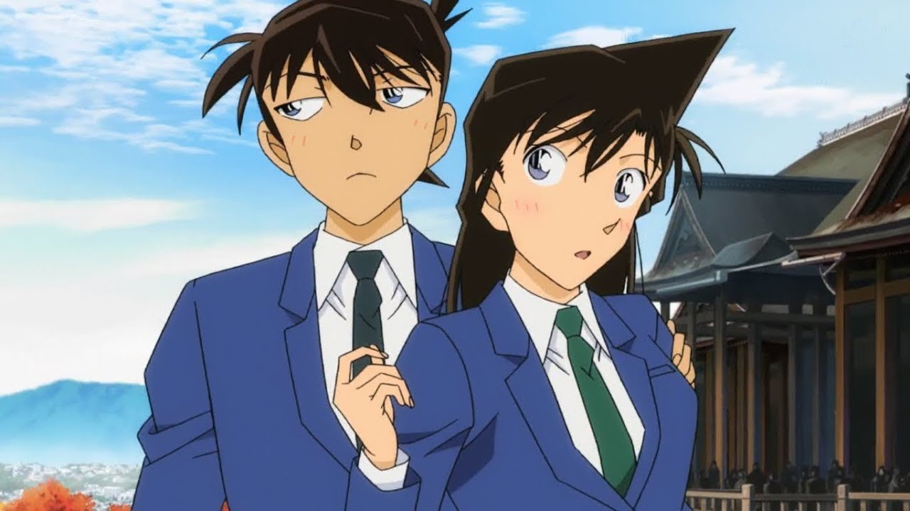

A Genius Highschool Detective
Shinichi Kudo menjadi anak kecil? inilah lore dari anime Detective Conan.
Who's Him?
Shinichi Kudo, siswa SMA yang juga seorang detektif ternama yang berubah menjadi anak-anak karena menyelidiki sebuah organisasi misterius. Shinichi kemudian mengambil Conan Edogawa sebagai nama samarannya dan tinggal di rumah Kogoro Mouri, seorang detektif swasta lokal yang bodoh. Berkat kehadiran Conan, Kogoro pun semakin naik daun dan terkenal.
He Meet Kaito Kid
Pertarungan antara kaito kid dan Shinichi Ini Pertama kalinya shinichi melawan kid. Shinichi membantu kepolisian untuk menangkap kid. Saat itu kid belum mengetahui tentang shinichi. Shinichi pun belum tau sama sekali mengenai kid, nama pencuri dari bulan ini pun shinichi belum mengetahuinya. Sampai saat ini perseteruan antara dua pemuda jenius ini pun masih berlangsung walaupun shinichi telah menjadi kecil.
Ran Mouri adalah teman masa kecil Shinichi Kudo. Teman baiknya selain Shinichi adalah teman sekelasnya Suzuki Sonoko, anak konglomerat yang terus-menerus menggodanya tentang hubungannya dengan Shinichi. Setelah menghilangnya Shinichi, Ran bertemu Conan Edogawa, yang diperkenalkan oleh Profesor Agasa sebagai "kerabat jauh" dan meminta Ran untuk merawatnya di rumahnya.

Why He Bacame Child?
Selama penyelidikan, ia disergap dan dilumpuhkan oleh anggota sindikat kejahatan yang dikenal sebagai Organisasi Hitam. Dalam upaya untuk membunuh detektif muda itu, mereka menelan paksa obat percobaan yang berbahaya. Namun, obat tersebut mengubahnya menjadi anak-anak daripada membunuhnya. Mengadopsi nama samaran Conan Edogawa dan merahasiakan identitas aslinya, Kudo tinggal bersama teman masa kecilnya Ran Mouri dan ayahnya Kogoro Mouri, yang merupakan seorang detektif swasta. Sepanjang seri tersebut, ia ikut serta dalam kasus yang ditangani oleh Kogoro. Meskipun demikian, setelah Kudo berhasil memecahkan kasus tersebut, ia akan menggunakan jarum bius yang tersembunyi dalam peralatan Prof. Agasa untuk membius Kogoro dan kemudian menggunakan pengubah suara yang dapat menirukan suaranya untuk mengungkapkan pemecahan kasus.